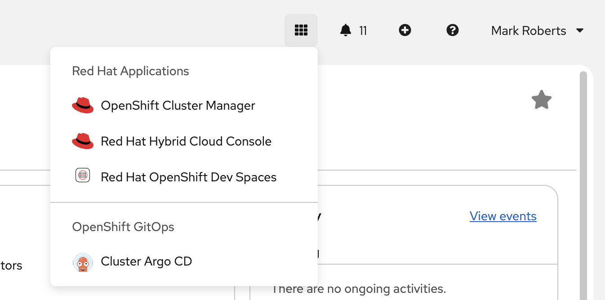
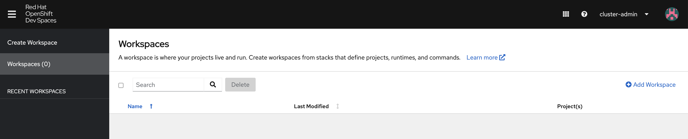
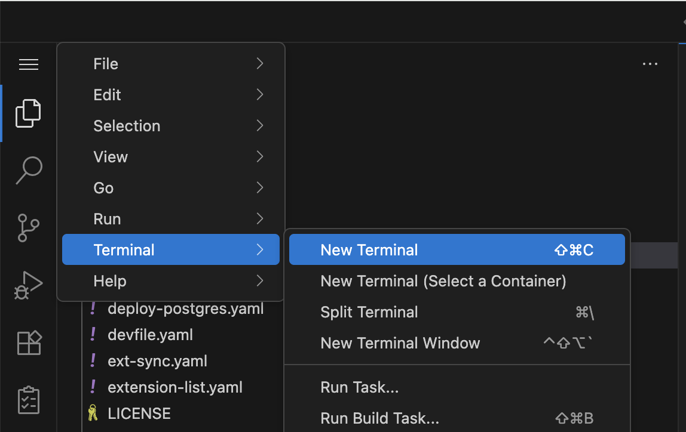
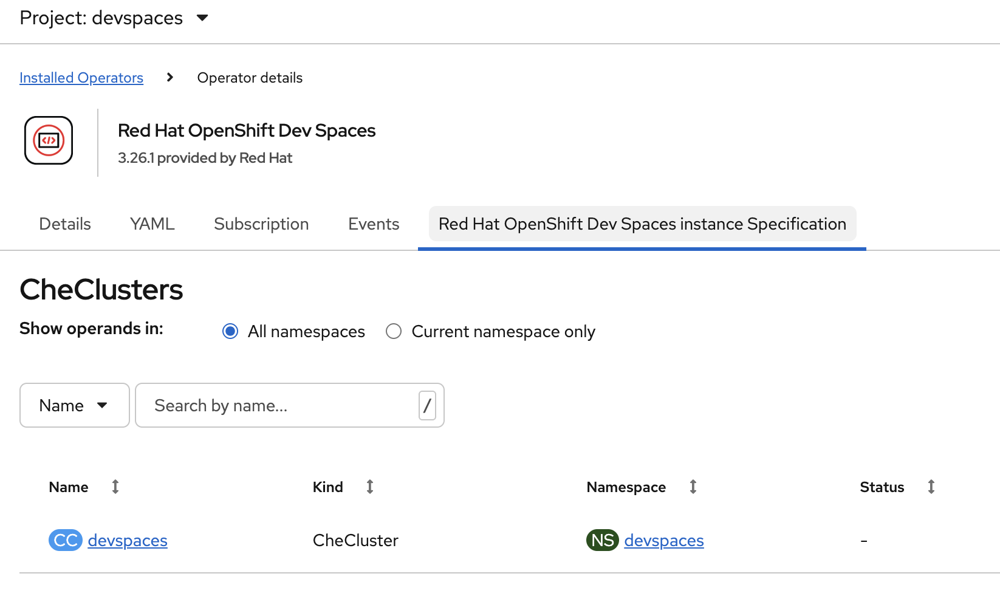
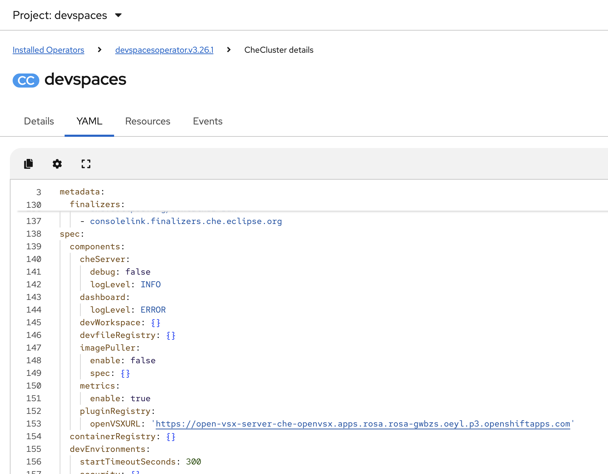
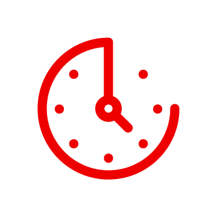
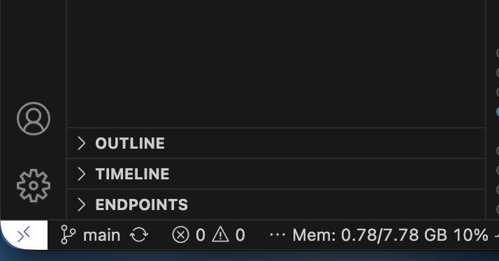
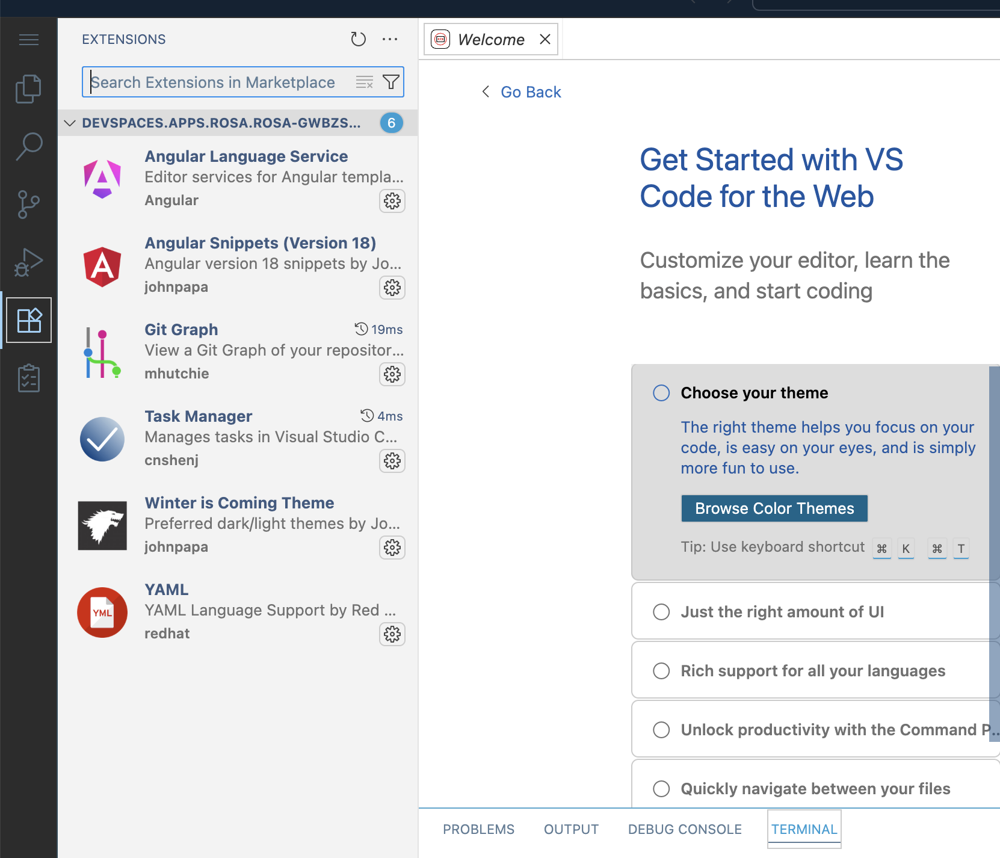

VS Code Extension Repository
The VS Code editor used in Dev Spaces can use any VS Code editor extension. This is an opportunity to create an extensive library of assets that can extend and augment the developer experience. However, giving developers free access to add any extension they find may create security, compliance and consistency problems that organizations would prefer to avoid.
Creating a self hosted Open VSX library of extensions disconnected from the internet enables an organisation to offer developers a curated set of extensions while maintaining an acceptable security posture and control.
To create a self hosted Open VSX library you will use a DevSpaces environment that has access to the required command line utilities.
Launch Dev Spaces
There are two methods for launching DevSpaces
Get the DevSpaces URL from a route
A URL made available as a route from the OpenShift Cluster. The URL can be found from executing the following command, which assumes that Dev Spaces has been installed in a namespace 'devspaces'. If this is not the case adjust the -n parameter below.
oc get route/devspaces -n devspaces -o jsonpath='{"https://"}{.spec.host}'For the cluster that you are using right now the above command should show a result of :
https://devspaces.%CLUSTER_SUBDOMAIN%/|
The URL above can be put into a global load balancer alongside DevSpaces URLs from other OpenShift cluster instances. This will enable a load balancer to distribute users across a number of OpenShift clusters for DevSpaces access which is recommended when the number of users exceeds 1000. |
Use the Quick Launch Menu Button
For a specific OpenShift cluster instance it is possible to launch DevSpaces from the header banner as shown below. Click the 9 box icon in the menu and then select Red Hat OpenShift Dev Spaces from the pop up window.

Creating a workspace
After the DevSpaced web UI has launched you need to create a workspace. Select the 'add workspace' button on the screen shown below.

Copy the URL below and paste it into the field 'Git repo URL', after clicking the 'add workspace' button.
https://github.com/cgruver/che-openvsx-registry.gitWhen the DevSpaces instance has launched open a terminal window by clicking on the three bar menu on the top left hand corner and selecting terminal as shown below.

The next section of instructions involve a copy of commands using the button on the right hand side of each text block and paste the content into the terminal window. For the first paste operation you may be asked if you want to allow pasting. This should only happen once.
Install the OpenVSX Registry
Create a new project and within that project create a build config to create the open-vsx-server deployment.
oc new-project che-openvsx
oc apply -f build-config.yaml
oc start-build open-vsx-server -n che-openvsx -w -FCreate an image stream to host the postgresql container image and pull it from the external quay.io repository
oc import-image postgresql-15-c9s:c9s --from=quay.io/sclorg/postgresql-15-c9s:c9s --confirm -n che-openvsxDeploy the postgresql container
oc apply -f deploy-postgres.yamlWait for the postgresql container to complete the deployment process and become available.
oc wait --for=condition=Available deployment/open-vsx-pg -n che-openvsx --timeout=180sDeploy Open VSX Registry container
oc apply -f deploy-openvsx.yamlWait for the Open VSX Registry container to complete the deployment process and become available.
oc wait --for=condition=Available deployment/open-vsx-server -n che-openvsx --timeout=180sEnable Eclipse Che / OpenShift Dev Spaces to use the hosted OpenVSX instance. Get the route for the OpenVSX application and then add that to the Che Cluster definition that was created previously.
OVSX_URL=https://$(oc get route open-vsx-server -n che-openvsx -o jsonpath={.spec.host})oc patch CheCluster devspaces -n devspaces --type merge --patch "{\"spec\":{\"components\":{\"pluginRegistry\":{\"openVSXURL\":\"${OVSX_URL}\"}}}}"To validate the above change use the OpenShift web user interface. Find the project in which you installed Dev Spaces, called devspaces. On the left hand side menu of OpenShift select the 'ecosystem' menu and then select the 'Installed Operators' menu item. This will display a list of all operators installed in the devspaces namespace. Select the 'Red Hat OpenShift DevSpaces' operator and then on the sub menu within it select the option 'Red Hat OpenShift Dev Spaces instance Specification'. This will display a list of Che clusters (you will have only one called 'devspaces').

Select the link to the Che cluster called devspaces (the link under the 'name' heading, not the link under the 'namespace' heading).
On the view of the Che cluster select the YAML tab and you should see the full definition as shown below. Scroll down slightly to see the section below which should indicate the OpenVSX registry URL in the pluginRegistry section.

Create an access token for the postgresql database by executing a command on the pod via a remote shell connection.
PG_POD=$(oc get pods --selector name=open-vsx-pg -n che-openvsx -o name)
oc rsh -n che-openvsx ${PG_POD} bash "-c" "PGDATA=/var/lib/pgsql/data psql -d openvsx -c \"INSERT INTO user_data (id, login_name) VALUES (1001, 'eclipse-che');\" && \
psql -d openvsx -c \"INSERT INTO personal_access_token (id, user_data, value, active, created_timestamp, accessed_timestamp, description) VALUES (1001, 1001, 'eclipse_che_token', false, current_timestamp, current_timestamp, 'extensions');\" && \
psql -d openvsx -c \"UPDATE user_data SET role='admin' WHERE user_data.login_name='eclipse-che';\""Enable the access token on the database
PG_POD=$(oc get pods --selector name=open-vsx-pg -n che-openvsx -o name)
oc rsh -n che-openvsx ${PG_POD} bash "-c" "PGDATA=/var/lib/pgsql/data psql -d openvsx -c \"UPDATE personal_access_token SET active = true;\""Install OpenVSX command line interface into the Dev Spaces instance.
|
This is a temporary addition of node modules to the Dev Spaces workspace. These changes will not persist a workspace restart operation but can be used here for the a specific task. |
npm install --global ovsxSet ovsx environment variables that are to be used for the extension download.
export OVSX_REGISTRY_URL=https://$(oc get route open-vsx-server -n che-openvsx -o jsonpath={.spec.host})
export OVSX_PAT=eclipse_che_token
export NODE_TLS_REJECT_UNAUTHORIZED='0'Download the extension into a tar file.
You may modify extension-list.yaml to suit your needs if there is a specific extension that you would like to see in the workshop.

./offline-extensions.sh -d -f=extension-list.yamlTake a note of the name of the bundle that is created.
Import the extensions
./offline-extensions.sh -u -b=/path/to/the/<filename-from-previous-command.tar>Disable the access token
oc rsh -n che-openvsx ${PG_POD} bash "-c" "PGDATA=/var/lib/pgsql/data psql -d openvsx -c \"UPDATE personal_access_token SET active = false;\""Test the Open VSX Registry
You should now have a running extension repository. To test this restart this workspace and wait for the extensions to load.
To restart the workspace press the small white icon in the bottom left hand cover of the screen shown below, and then select 'Dev Spaces: Restart Workspace' from the menu at the top of the screen.

When the workspace restarts you will be asked again to trust the author of the content being cloned into the workspace. Trust the content and then wait a second for the extensions to load. One of the extensions sets the workspace appearance so you should see a change to a white background and blue text theme called 'Winter is coming'.
Click on the 'extensions' icon on the far left hand side of the DevSpace which should be the fifth down from the top. This will show a list of extensions loaded into the workspace as shown below.
